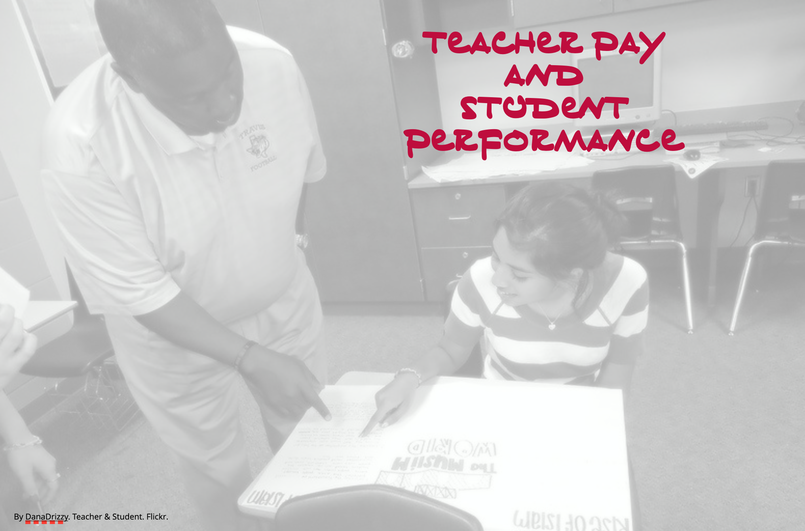

Assignment 03
SIMPLE LINEAR REGRESSION: INFERENCE
Should more money be spent on public schools or should that money be spent elsewhere? Both sides of this ongoing public debate have been argued passionately, using a multitude of anecdotal evidence. Although we will not settle this debate, we will examine data akin to the types of data that policy makers use to make funding decisions. Specifically, we will examine whether teacher salaries are related to SAT scores at the state level.
This goal of this assignment is to give you more experience fitting and interpreting regression models. In this assignment, you will use the data from the file state-education.csv to examine the relationship between teacher salaries and student total SAT scores at the state level.
Part I: Unstandardized Regression
Before carrying out any analyses, create a predictor called salary_thousand that indicates the average state salary in thousands of dollars (e.g., if salary = 52143; salary_thousand = 52.143). This variable (not salary) should be used in all analyses for Part I. Fit a regression model using teacher salaries to predict SAT scores.
Using symbols, write the null hypothesis that is tested by the F-statistic in this analysis.
Write no more than three sentences (to be included in a publication) that summarizes the results of the omnibus analysis. A summary of the results includes a written description of what is being tested by the F-test and the statistical results. At a minimum report the F-statistic, df, and p-value. A summary should also indicate what the statistical results suggest about the compatibility of the empirical data to the null hypothesis and what this means about the potential relationship between states’ average teacher salaries and average SAT scores.
Using symbols, write the null hypothesis that is tested by the t-statistic for the slope.
Based on the results of the t-test for the slope, are the empirical data consistent with the null hypothesis that the sample slope is entirely due to sampling error? Explain.
Compute and interpret the 95% compatibility interval for the slope.
Create a plot that displays the regression line from the unstandardized regression analysis. This plot should also include a confidence envelope (uncertainty) for the regression line. Be sure to give your plot an appropriate caption.
Part II: Centering a Predictor
Center the salary_thousand predictor by subtracting the mean teacher salary from each value. Call this new variable center_salary_thousand (e.g., centered_salary_thousand = salary_thousand - mean(salary_thousand)). This variable should be used in all analyses in Part II. Regress the SAT scores on the centered salaries.
The results of the F-test for this analysis are identical to the results of the F-test for the analysis in Part I. Explain why this is expected by referring to and comparing the hypothesis being tested in both sets of analyses.
The results of the t-test for the intercept in this analysis are different than the results of the t-test for the intercept in the analysis in Part I. Explain why this is expected by referring to and comparing the hypothesis being tested (and what that means) in both sets of analyses.
Part III: Standardized Regression
Convert the uncentered teacher salaries (salary_thousand) into z-scores by subtracting the mean salary and dividing by the standard deviation. Call this new variable z_salary (e.g., z_salary = (salary_thousand - mean(salary_thousand)) / sd(salary_thousand)). Also convert the SAT scores into z-scores and call that variable z_sat (e.g., z_sat = (sat - mean(sat)) / sd(sat)). Regress the SAT z-scores on the salary z-scores.
- The p-value of the t-test for the intercept in this analysis is one. Explain why this is expected by referring to the hypothesis being tested in this analysis. (Hint: Think about what the intercept is and how that relates to what is being tested.)
Part IV: Study Design and Causation
- The test of the slope (regardless of analysis) suggests that teacher salaries seem to be related to SAT scores. Unfortunately this relationship is negative, indicating that higher teacher salaries are associated with lower SAT scores. A public-policy wonk wants to use this data to support the de-funding of public schools. Write a couple sentences that explain to this person why your analysis does not support this causal conclusion based on the study design. (Hint: Recall that inferring causation requires particular study designs. You may need to go back to your pre-requisite knowledge here.)